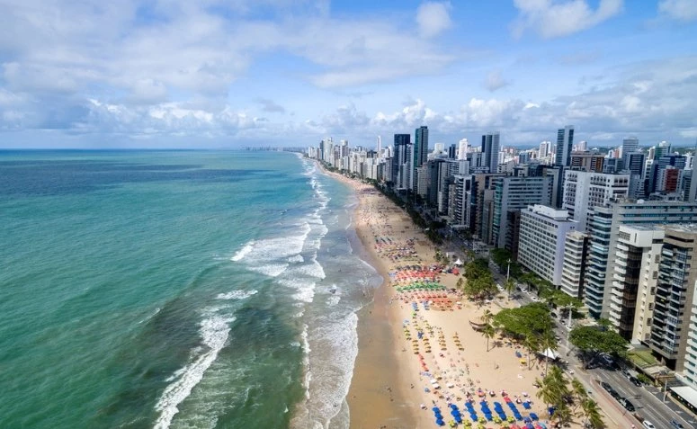
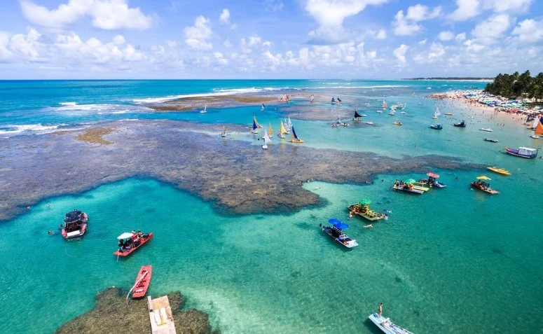
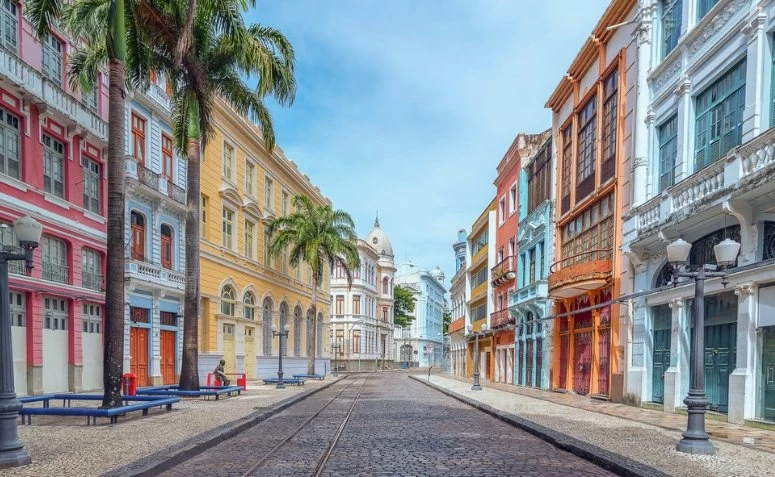

Outros Pontos Turísticos de Recife
Praia da Boa Viagem
A Praia de Boa Viagem é a praia urbana mais famosa e importante da cidade de Recife. Ela fica no bairro da Boa Viagem e tem cerca de 7 quilômetros de extensão. Além disso, ela é delimitada de um lado pela Praia do Pina e do outro pela Praia de Piedade.
Porto de Galinha
Apesar de ficar um pouquinho mais distante – uma hora e vinte minutos de Recife -, Porto de Galinhas é um lugar muito famoso por sua beleza incomparável, então, se você já está por Pernambuco e tem um dia sobrando, por que não visitá-lo?
Rua do Bom Jesus e Praça do Arsenal
A Rua do Bom Jesus é famosa por sua arquitetura e história. Ao final desta rua, encontra-se a Praça do Arsenal, um lugar legal para descansar, tirar algumas fotos e admirar a paisagem.